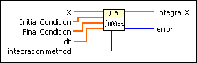
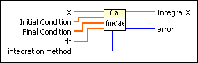
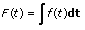
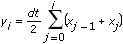
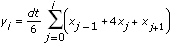
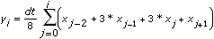
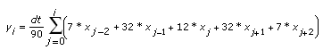

Integral x(t) VI
Owning Palette: Integration & Differentiation VIs
Requires: Full Development System
Performs the discrete integration of the sampled signal X.

 Add to the block diagram Add to the block diagram |
 Find on the palette Find on the palette |
Owning Palette: Integration & Differentiation VIs
Requires: Full Development System
Performs the discrete integration of the sampled signal X.

| Add to the block diagram |
Find on the palette |
 |
X is the sampled signal from time 0 to n – 1 where n is the number of elements in X. | ||||||||
|
Initial Condition specifies the initial condition of X in the integration calculation. If integration method is Trapezoidal Rule or Simpson�s Rule, the VI uses the first element in Initial Condition to calculate the integration. If integration method is Simpson�s 3/8 Rule or Bode Rule, the VI uses the first two elements in Initial Condition to calculate the integration. The default is [0]. | ||||||||
|
Final Condition specifies the final condition of X in the integration calculation. If integration method is Trapezoidal Rule, the VI ignores Final Condition. If integration method is Simpson�s Rule or Simpson�s 3/8 Rule, the VI uses the first element in Final Condition to calculate the integration. If integration method is Bode Rule, the VI uses the first two elements in Final Condition to calculate the integration. The default is [0]. | ||||||||
 |
dt is the sampling interval and must be greater than 0. The default is 1.0. If dt is less than or equal to 0, the VI sets Integral X to an empty array and returns an error. | ||||||||
 |
integration method specifies the method to use to perform the numeric integration.
|
||||||||
 |
Integral X is the discrete integration of X. | ||||||||
 |
error returns any error or warning from the VI. You can wire error to the Error Cluster From Error Code VI to convert the error code or warning into an error cluster. |
Integral x(t) calculates a definite integral. The value of the output array at any value x is the area under the curve of the input array between 0 and x.
The integral F(t) of a function f(t) is defined as

Let y represent the sampled output sequence Integral X.
If integration method is Trapezoidal Rule, the VI obtains the elements of y using the following equation:

for i = 0, 1, 2, …, n – 1,
where n is the number of samples in X and x–1 is the first element in Initial Condition.
If integration method is Simpson's Rule, the VI obtains the elements of y using the following equation:

for i = 0, 1, 2, …, n – 1,
where n is the number of samples in X, x–1 is the first element in Initial Condition, and xn is the first element in Final Condition.
If integration method is Simpson's 3/8 Rule, the VI obtains the elements of y using the following equation:

for i = 0, 1, 2, …, n – 1,
where n is the number of samples in X, x–2 and x–1 are the first and second elements in Initial Condition, and xn is the first element in Final Condition.
If integration method is Bode Rule, the VI obtains the elements of y using the following equation:

for i = 0, 1, 2, …, n – 1,
where n is the number of samples in X, x–2 and x–1 are the first and second elements in Initial Condition, and xn and xn+1 are the first and second elements in Final Condition.
The Initial Condition and Final Condition minimize the overall error by increasing the accuracy at the boundaries, especially when the number of samples is small. Determining boundary conditions before the fact enhances accuracy.
Refer to the Probability Density VI in the labview\examples\Mathematics\Probability and Statistics directory for an example of using the Integral x(t) VI.
 Open example Find related examples
Open example Find related examples